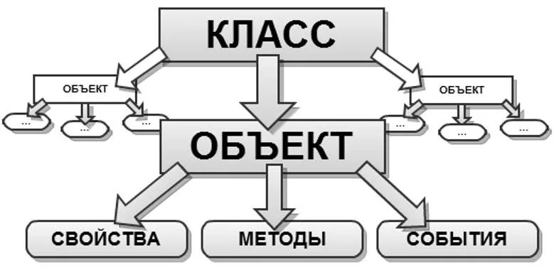
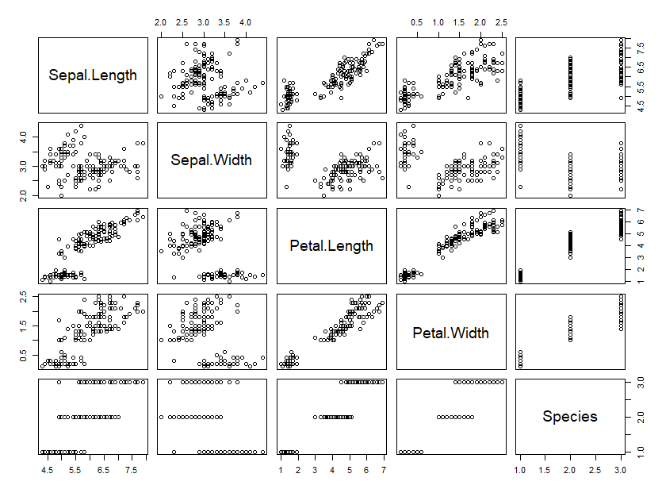
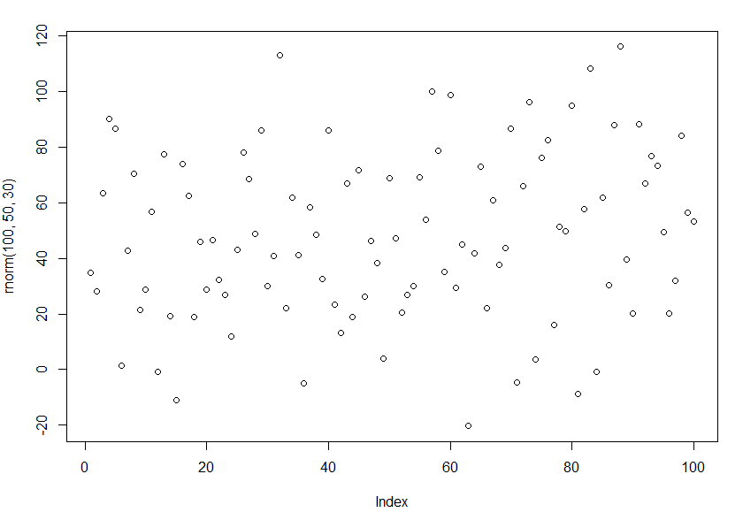
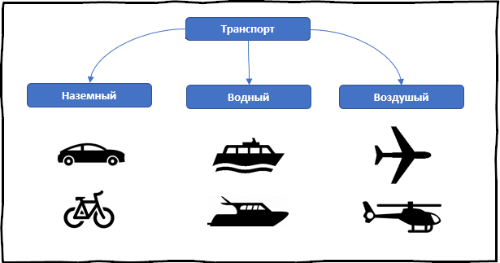

ООП в языке R (часть 1): S3 классы
R — это объектно ориентированный язык. В нём абсолютно всё является объектом, начиная от функций и заканчивая таблицами.
В свою очередь, каждый объект в R относится к какому-либо классу. На самом деле, в окружающем нас мире ситуация примерно такая же. Мы окружены объектами, и каждый объект можно отнести к классу. От класса зависит набор свойств и действий, которые с этим объектом можно произвести.
Например, на любой кухне есть стол и плита. И кухонный стол и плиту можно назвать кухонным оборудованием. Свойства стола, как правило, ограничиваются его габаритами, цветом и материалом, из которого он сделан. У плиты набор свойств шире, как минимум обязательным будет мощность, количество конфорок и тип плиты (электро или газовая).
https://habr.com/ru/post/453964/
Впервые статья была опубликована на Хабре.
Действия, которые можно производить над объектами, называются их методами. Для стола и плиты соответственно набор методов также будет разный. За столом можно обедать, на нём можно готовить, но невозможно производить термическую обработку еды, для чего как правило используется плита.

Содержание
- Свойства классов
- Обобщённые функции
- Что такое S3 класс и как создать собственный класс
- Функции присваивания значений пользовательским S3 классам
- Разработка собственных методов для обобщённой функции print
- Создание обобщённой функции и методов к ней
- Наследование
- Когда вам могут пригодиться собственные классы
- Заключение
Свойства классов
В языке R также каждый объект относится к какому-либо классу. В зависимости от класса он имеет определённый набор свойств и методов. В терминах объектно-ориентированного программирования (ООП) возможность объединения схожих по набору свойств и методов объектов в группы (классы) называется инкапсуляция.
Вектор является наиболее простым классом объектов в R, он обладает таким свойством как длина (length). Для примера мы возьмём встроенный вектор letters.
length(letters)
[1] 26
С помощью функции length мы получили длину вектора letters. Теперь попробуем применить эту же функцию к встроенному дата фрейму iris.
length(iris)
[1] 5
Функция length, применимая к таблицам, возвращает количество столбцов.
У таблиц есть и другое свойство, размерность.
dim(iris)
[1] 150 5
Функция dim в примере выше выводит информацию о том, что в таблице iris 150 строк и 5 столбцов.
В свою очередь, у вектора нет размерности.
dim(letters)
NULL
Таким образом мы убедились, что у объектов разного класса имеется разный набор свойств.
Обобщённые функции
В R множество обобщённых функций: print, plot, summary и т.д. Эти функции по-разному работают с объектами разных классов.
Возьмём, к примеру функцию plot. Давайте запустим её, передав в качестве её главного аргумента таблицу iris.
plot(iris)
Результат:

А теперь попробуем передать функции plot вектор из 100 случайных чисел, имеющих нормальное распределение.
plot(rnorm(100, 50, 30))
Результат:

Мы получили разные графики, в первом случае корреляционную матрицу, во втором график рассеивания, на котором по оси x отображается индекс наблюдения, а по оси y его значение.
Таким образом, функция plot умеет подстраиваться под работу с разными классами. Если вернуться к терминологии ООП, то возможность определить класс входящего объекта и выполнять различные действия с объектами разных классов называется полиморфизм. Получается это за счёт того, что данная функция всего лишь является оболочкой к множеству методов, написанных под работу с разными классами. Убедиться в этом можно с помощью следующей команды:
body(plot)
UseMethod("plot")
Команда body выводит в консоль R тело функции. Как видите тело функции body состоит всего из одной команды UseMethod("plot").
Т.е. функция plot, всего лишь запускает один из множества написанных к ней методов в зависимости от класса передаваемого ей объекта. Посмотреть список всех её методов можно следующим образом.
methods(plot)
[1] plot.acf* plot.data.frame* plot.decomposed.ts*
[4] plot.default plot.dendrogram* plot.density*
[7] plot.ecdf plot.factor* plot.formula*
[10] plot.function plot.hclust* plot.histogram*
[13] plot.HoltWinters* plot.isoreg* plot.lm*
[16] plot.medpolish* plot.mlm* plot.ppr*
[19] plot.prcomp* plot.princomp* plot.profile.nls*
[22] plot.raster* plot.spec* plot.stepfun
[25] plot.stl* plot.table* plot.ts
[28] plot.tskernel* plot.TukeyHSD*
Полученный результат говорит о том, что функция plot имеет 29 методов, среди которых есть plot.default, который срабатывает по умолчанию, если функция получает на вход объект неизвестного ей класса.
С помощью функции methods также можно получить и набор всех обобщённых функций, у которых есть метод, написанный под какой-либо класс.
methods(, "data.frame")
[1] $<- [ [[ [[<-
[5] [<- aggregate anyDuplicated as.data.frame
[9] as.list as.matrix by cbind
[13] coerce dim dimnames dimnames<-
[17] droplevels duplicated edit format
[21] formula head initialize is.na
[25] Math merge na.exclude na.omit
[29] Ops plot print prompt
[33] rbind row.names row.names<- rowsum
[37] show slotsFromS3 split split<-
[41] stack str subset summary
[45] Summary t tail transform
[49] type.convert unique unstack within
Что такое S3 класс и как создать собственный класс
В R есть ряд классов которые вы можете создавать самостоятельно. Один из наиболее популярных — S3.
Данный класс представляет из себя список, в котором хранятся различные свойства созданного вами класса. Для создания собственного класса достаточно создать list и присвоить ему название класса.
В книге “Искусство программирования на R” в качестве примера приводится класс employee, в котором хранится информация о сотруднике. В качестве примера к этой статье я также решил взять объект для хранения информации о сотрудниках. Но сделал его более сложным и функциональным.
# создаём структуру класса
employee1 <- list(name = "Oleg",
surname = "Petrov",
salary = 1500,
salary_datetime = Sys.Date(),
previous_sallary = NULL,
update = Sys.time())
# присваиваем объекту класс
class(employee1) <- "emp"
Таким образом, мы создали свой собственный класс, который в своей структуре хранит следующие данные:
- Имя сотрудника
- Фамилия сотрудника
- Зарплата
- Время, когда была установлена зарплата
- Предыдущая зарплата
- Дата и время последнего обновления информации
После чего командой class(employee1) <- "emp" мы присваиваем объекту класс emp.
Для удобства создания объектов класса emp можно написать функцию.
Код функции для создания объектов класса emp
# функция для создания объекта
create_employee <- function(name,
surname,
salary,
salary_datetime = Sys.Date(),
update = Sys.time()) {
out <- list(name = name,
surname = surname,
salary = salary,
salary_datetime = salary_datetime,
previous_sallary = NULL,
update = update)
class(out) <- "emp"
return(out)
}
# создаём объект класса emp с помощью функции create_employee
employee1 <- create_employee("Oleg", "Petrov", 1500)
# проверяем класс созданного объекта
class(employee1)
[1] "emp"
Функции присваивания значений пользовательским S3 классам
Итак, мы создали собственный класс emp, но пока это нам ничего не дало. Давайте разберёмся, зачем мы создали свой класс и что с ним можно делать.
В первую очередь вы можете написать функции присваивания для созданного класса.
Функция присваивания для [
"[<-.emp" <- function(x, i, value) {
if ( i == "salary" || i == 3 ) {
cat(x$name, x$surname, "has changed salary from", x$salary, "to", value)
x$previous_sallary <- x$salary
x$salary <- value
x$salary_datetime <- Sys.Date()
x$update <- Sys.time()
} else {
cat( "You can`t change anything except salary" )
}
return(x)
}
Функция присваивания для [[
"[[<-.emp" <- function(x, i, value) {
if ( i == "salary" || i == 3 ) {
cat(x$name, x$surname, "has changed salary from", x$salary, "to", value)
x$previous_sallary <- x$salary
x$salary <- value
x$salary_datetime <- Sys.Date()
x$update <- Sys.time()
} else {
cat( "You can`t change anything except salary" )
}
return(x)
}
Функции присваивания при создании всегда указываются в кавычках, и выглядят так: "[<-.имя класса" / "[[<-.имя класса". И имеют 3 обязательных аргумента.
- x — Объект, которому будет присваиваться значение;
- i — Имя / индекс элемента объекта (name, surname, salary, salary_datetime, previous_sallary, update);
- value — Присваиваемое значение.
Далее в теле функции вы пишете, как должны измениться элементы вашего класса. В моём случае я хочу, чтобы у пользователя была возможность менять только зарплату (элемент salary, индекс которого 3). Поэтому внутри функции я пишу проверку if ( i == "salary" || i == 3 ). В случае, если пользователь пытается редактировать другие свойства, он получает сообщение "You can't change anything except salary".
При изменении элемента salary выводится сообщение, содержащее имя и фамилию сотрудника, его текущий и новый уровень зарплаты. Текущая зарплата передаётся в свойство previous_sallary, а salary присваивается новое значение. Так же обновляются значения свойств salary_datetime и update.
Теперь можно попробовать изменить зарплату.
employee1["salary"] <- 1750
Oleg Petrov has changed salary from 1500 to 1750
Разработка собственных методов для обобщённых функций
Ранее вы уже узнали, что в R существуют обобщённые функции, которые меняют своё поведение в зависимости от класса, получаемого на вход объекта.
Вы можете дописывать свои методы существующим обобщённым функциям и даже создавать свои обобщённые функции.
Одной из наиболее часто используемых обобщённых функций является print. Данная функция срабатывает каждый раз, когда вы вызываете объект по его названию. Сейчас вывод на печать созданного нами объекта класса emp выглядит так:
$name
[1] "Oleg"
$surname
[1] "Petrov"
$salary
[1] 1750
$salary_datetime
[1] "2019-05-29"
$previous_sallary
[1] 1500
$update
[1] "2019-05-29 11:13:25 EEST"
Давайте напишем свой метод для функции print.
print.emp <- function(x) {
cat("Name:", x$name, x$surname, "\n",
"Current salary:", x$salary, "\n",
"Days from last udpate:", Sys.Date() - x$salary_datetime, "\n",
"Previous salary:", x$previous_sallary)
}
Теперь функция print умеет выводить на печать объекты нашего самописного класса emp. Достаточно просто ввести в консоль имя объекта и получим следующий вывод.
employee1
Name: Oleg Petrov
Current salary: 1750
Days from last udpate: 0
Previous salary: 1500
Создание обобщённой функции и методов
Большинство обобщённых функций внутри выглядят однотипно и просто используют функцию UseMethod.
# обобщённая функция
get_salary <- function(x, ...) {
UseMethod("get_salary")
}
Теперь напишем для неё два метода, один для работы с объектами класса emp, второй метод будет запускаться по умолчанию для объектов всех других классов, под работу с которыми у нашей обобщённой функции нет отдельно написанного метода.
# метод для обработки объектов класса emp
get_salary.emp <- function(x) x$salary
# метод который срабатывает по умолчанию
get_salary.default <- function(x) cat("Work only with emp class objects")
Название метода состоит из имени функции и класса объектов, которые данный метод будет обрабатывать. Метод default будет запускаться каждый раз, если вы передаёте в функцию объект класса, под который не написан свой метод.
get_salary(employee1)
[1] 1750
get_salary(iris)
Work only with emp class objects
Наследование
Ещё один термин, с которым вы обязательно столкнётесь при изучении объектно-ориентированного программирования.

Всё, что изображено на картинке, можно отнести к классу транспорт. И действительно, у всех этих объектов есть общий метод — передвижение, и общие свойства, например, скорость. Но тем не менее все 6 объектов можно разделить на три подкласса: наземный, водный и воздушный. При этом подкласс унаследует свойства родительского класса, но также будет обладать дополнительными свойствами и методами. Подобное свойство в рамках объектно-ориентированного программирования называется наследование.
В нашем примере мы можем выделить в отдельный подкласс remote_emp сотрудников, работающих удалённо. Такие сотрудники будут иметь дополнительное свойство: город проживания.
# создаём структуру подкласса
employee2 <- list(name = "Ivan",
surname = "Ivanov",
salary = 500,
salary_datetime = Sys.Date(),
previous_sallary = NULL,
update = Sys.time(),
city = "Moscow")
# присваиваем объекту подкласс remote_emp
class(employee2) <- c("remote_emp", "emp")
# проверяем класс объекта
class(employee2)
[1] "remote_emp" "emp"
При операции присваивании класса создавая подкласс мы используем вектор, в котором первым элементом идёт имя подкласса, далее идёт имя родительского класса.
В случае наследования все обобщённые функции и методы написанные для работы с родительским классом будут корректно работать и с его подклассами.
# выводим объект подкласса remote_emp на печать
employee2
Name: Ivan Ivanov
Current salary: 500
Days from last udpate: 0
Previous salary:
# запрашиваем свойство salary объекта подкласса remote_emp
get_salary(employee2)
[1] 500
Но вы можете разрабатывать методы отдельно для каждого подкласса.
# метод для получения свойства salary объектов подкласса remote_emp
get_salary.remote_emp <- function(x) {
cat(x$surname, "remote from", x$city, "\n")
return(x$salary)
}
# запрашиваем свойство salary объекта подксласса remote_emp
get_salary(employee2)
Ivanov remote from Moscow
[1] 500
Работает это следующим образом. Сначала обобщённая функция ищет метод написанный для подкласса remote_emp, если не находит то идёт дальше и ищет метод написанный для родительского класса emp.
Когда вам могут пригодиться собственные классы
Вряд ли функционал создания собственных S3 классов будет полезен тем, кто только начинает свой путь в освоении языка R.
Лично мне они пригодились в разработке пакета rfacebookstat. Дело в том, что в API Facebook, для загрузки событий и реакции на рекламные публикации в различных группировках существует параметр action_breakdowns.
При использовании таких группировок вы получаете ответ в виде JSON структуры следующего формата:
{
"action_name": "like",
"action_type": "post_reaction",
"value": 6
}
{
"action_type": "comment",
"value": 4
}
Количество и название элементов для разных action_breakdowns разное, поэтому для каждого необходимо писать свой парсер. Для решения этой задачи я использовал функционал создания пользовательских S3 классов и обобщённой функцией с набором методов.
При запросе статистики по событиям с группировками, в зависимости от значений аргументов определялся класс который присваивался полученному от API ответу. Ответ передавался в обощённую функцию, и в зависимости от указанного ранее класса определялся метод который осуществлял парсинг полученного результата. Кому интересно углубиться в детали реализации то тут можно найти код создания обощённой функции и методов, а тут их использование.
В моём случае классы и методы их обработки я использовал исключительно внутри пакета. Если вам необходимо в целом предоставить пользователю пакета интерфейс для работы с созданными вами классами, то все методы необходимо включить в качестве директивы S3method в файл NAMESPACE, в следующем виде.
S3method(имя_метода,класс)
S3method("[<-",emp)
S3method("[[<-",emp)
S3method("print",emp)
Заключение
Как понятно из названия статьи это всего лишь первая часть, т.к. в R помимо S3 классов существуют и другие: S4, R5 (RC), R6. В будущем я постараюсь написать о каждой из перечисленных реализаций ООП. Тем не менее у кого уровень английского позволяет свободно читать книги, то Хедли Викхем достаточно лаконично, и с примерами осветил эту тему в своей книге “Advanced R”.
Если вдруг в статье я упустил некоторую важную информацию про S3 классы буду благодарен если напишите об этом в комментариях.